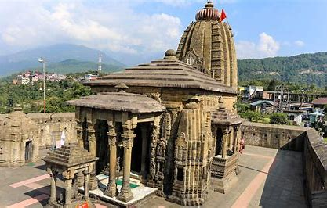

Sunderdhunga Trek
Destinations: Bageshwar, Saung, Loharkhet, Khati, Jatoli, Kathalaya, Sunderdhunga
Experience: Trekking (moderate to challenging)
Maximum Altitude: 4,320 m (Approx)
Duration: 8 days
Ideal Time: May, June, September and October
START
DAY 1

BAGESHWAR
Day 1 of the trek starts from Bageshwar. Try to squeeze out some time to visit the ancient Baghnath temple. Cover a distance of 40 kilometers by bus while traveling to Saung. Then a 3 kilometers trek to Lohanhel.
DAY 2

KHATI
The next morning after a hearty breakfast, set off for Loharkhet. While covering a distance of 19 kilometers by trek reach Khati. Khati is the campsite and is the largest village in this region. One can immerse in the captivating beauty of the Nandakot peaks. Overnight in Khati.
DAY 3

JATOLI
Day 3 of the Sunderdhunga trek comprises a 14 kms trek to Jatoli. The trek starts from Khati village. It is the last village en-route Pindari and Kafni glacier. This trail passes through a thick cover of Rhododendrons. Reach Jatoli post evening and spend the night there.
DAY 4

KATHALIYA
Next morning grab a good breakfast as again it is going to be a long day. Pack your rucksack for Kathaliya. In this 13 kms trek you will cross thick covers of alpine. The intensity of this stretch is moderate. One will reach Kathaliya post evening. It is the last inhabited village enroute Sunderdhunga glacier. Dinner and overnight halt in Kathaliya.
DAY 5

SUNDERDHUNGA
Eat a good breakfast at Kathaliya. This will be the ultimate stop now, before descending back to the base. Get ready for a trek to Sunderdhunga post breakfast. You can choose to trek via Makoli Top or Sukhram Cave. The route via Makoli Top is steep but it’s worth taking. Reach Sunderdhunga and return to Kathaliya the same day. Dinner and overnight stay at Kathalia.
DAY 6

JATOLI
The descent starts on day 6. Start your trek in the morning. It is a 13 kilometers trek to Jatoli. It will take around 5 hours to reach Jatoli. Overnight stay in Jatoli.
DAY 7

DHAKURI
After a good night’s sleep, it’s time to pack up from Jatoli. Start your day early for a 14 kilometers trek back to Dhakuri. Overnight stay in Dhakuri.
DAY 8

LOHARKHET AND BAGESHWAR
It’s time to go back to the pavilion. Start your 14 kilometers trek to Loharkhet from Dhakuri early in the morning. This is again a 14 kilometers downwards trail. After reaching Loharkhet, take a bus for Bageshwar. Tour concludes in Bageshwar.
END